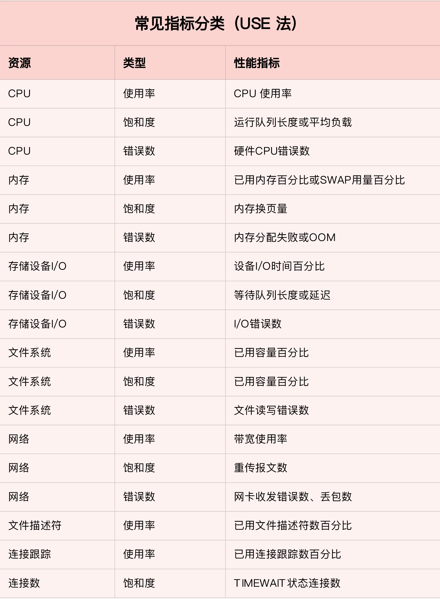
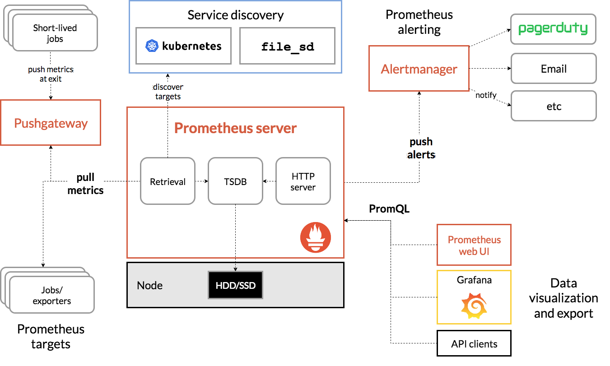
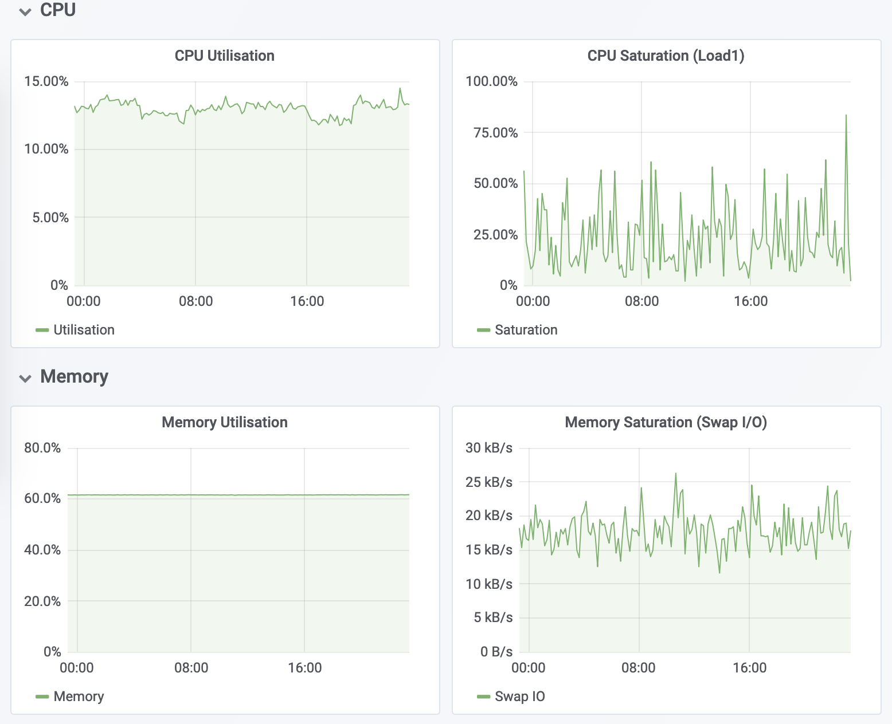

要做好监控，最核心的就是全面的、可量化的指标，这包括系统和应用两个方面。
USE 法
为你介绍一种专门用于性能监控的 USE（Utilization Saturation and Errors）法。USE 法把系统资源的性能指标，简化成了三个类别，即使用率、饱和度以及错误数。
- 使用率，表示资源用于服务的时间或容量百分比。100% 的使用率，表示容量已经用尽或者全部时间都用于服务。
- 饱和度，表示资源的繁忙程度，通常与等待队列的长度相关。100% 的饱和度，表示资源无法接受更多的请求。错误数表示发生错误的事件个数。
- 错误数越多，表明系统的问题越严重。
这三个类别的指标，涵盖了系统资源的常见性能瓶颈，所以常被用来快速定位系统资源的性能瓶颈。这样，无论是对 CPU、内存、磁盘和文件系统、网络等硬件资源，还是对文件描述符数、连接数、连接跟踪数等软件资源，USE 方法都可以帮你快速定位出，是哪一种系统资源出现了性能瓶颈。

监控系统
一个完整的监控系统通常由数据采集、数据存储、数据查询和处理、告警以及可视化展示等多个模块组成。所以，要从头搭建一个监控系统，其实也是一个很大的系统工程。
现在已经有很多开源的监控工具可以直接使用，比如最常见的 Zabbix、Nagios、Prometheus 等等。
就以 Prometheus 为例，为你介绍这几个组件的基本原理。如下图所示，就是 Prometheus 的基本架构：

先看数据采集模块。最左边的 Prometheus targets 就是数据采集的对象，而 Retrieval 则负责采集这些数据。从图中你也可以看到，Prometheus 同时支持 Push 和 Pull 两种数据采集模式。
- Pull 模式，由服务器端的采集模块来触发采集。只要采集目标提供了 HTTP 接口，就可以自由接入（这也是最常用的采集模式）。
- Push 模式，则是由各个采集目标主动向 Push Gateway（用于防止数据丢失）推送指标，再由服务器端从 Gateway 中拉取过去（这是移动应用中最常用的采集模式）。
由于需要监控的对象通常都是动态变化的，Prometheus 还提供了服务发现的机制，可以自动根据预配置的规则，动态发现需要监控的对象。这在 Kubernetes 等容器平台中非常有效。
第二个是数据存储模块。为了保持监控数据的持久化，图中的 TSDB（Time series database）模块，负责将采集到的数据持久化到 SSD 等磁盘设备中。TSDB 是专门为时间序列数据设计的一种数据库，特点是以时间为索引、数据量大并且以追加的方式写入。
第三个是数据查询和处理模块。刚才提到的 TSDB，在存储数据的同时，其实还提供了数据查询和基本的数据处理功能，而这也就是 PromQL 语言。PromQL 提供了简洁的查询、过滤功能，并且支持基本的数据处理方法，是告警系统和可视化展示的基础。
第四个是告警模块。右上角的 AlertManager 提供了告警的功能，包括基于 PromQL 语言的触发条件、告警规则的配置管理以及告警的发送等。不过，虽然告警是必要的，但过于频繁的告警显然也不可取。所以，AlertManager 还支持通过分组、抑制或者静默等多种方式来聚合同类告警，并减少告警数量。
最后一个是可视化展示模块。Prometheus 的 web UI 提供了简单的可视化界面，用于执行 PromQL 查询语句，但结果的展示比较单调。不过，一旦配合 Grafana，就可以构建非常强大的图形界面了。
以刚才提到的 USE 方法为例，我使用 Prometheus，可以收集 Linux 服务器的 CPU、内存、磁盘、网络等各类资源的使用率、饱和度和错误数指标。然后，通过 Grafana 以及 PromQL 查询语句，就可以把它们以图形界面的方式直观展示出来。

小结
系统监控的核心是资源的使用情况，包括 CPU、内存、磁盘和文件系统、网络等硬件资源，以及文件描述符数、连接数、连接跟踪数等软件资源。而这些资源，都可以通过 USE 法来建立核心性能指标。
USE 法把系统资源的性能指标，简化成了三个类别，即使用率、饱和度以及错误数。 这三者任一类别过高时，都代表相对应的系统资源有可能存在性能瓶颈。
基于 USE 法建立性能指标后，还需要通过一套完整的监控系统，把这些指标从采集、存储、查询、处理，再到告警和可视化展示等串联起来。你可以基于 Zabbix、Prometheus 等各种开源的监控产品，构建这套监控系统。这样，不仅可以将系统资源的瓶颈快速暴露出来，还可以借助监控的历史，事后追查定位问题。